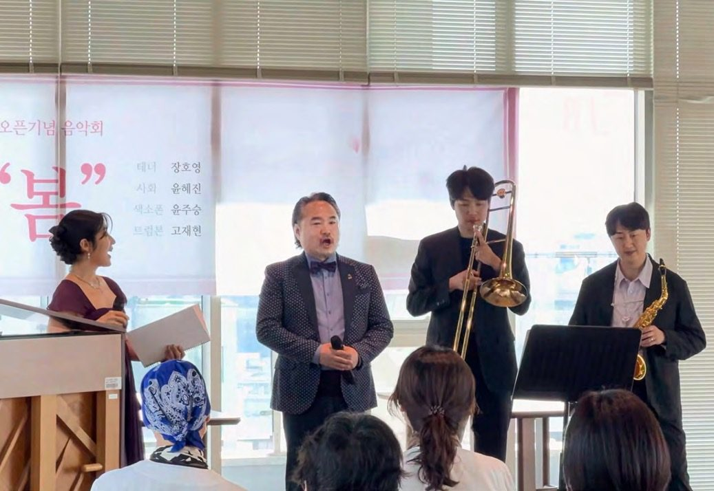
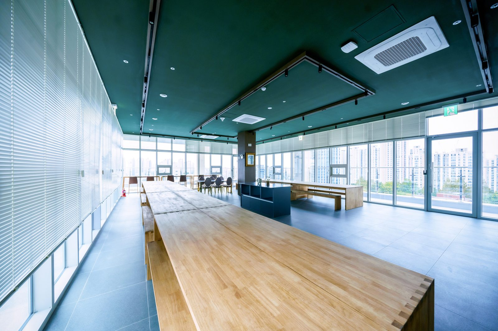
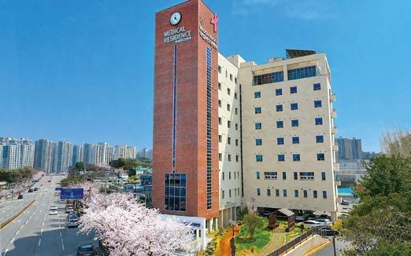

첫 화면 › 소식
하일렌요양병원의 소식지 웹판과 초청 특강, 월별 프로그램 공지입니다
소식지 웹판, 초청 특강, 월별 프로그램 공지를 여기에 올립니다. 입원 안내·단기입원·외래·비용은 각 안내에서 보실 수 있고, 여기에는 기간이 있는 소식만 올립니다. 최근 글을 위에 둡니다.

- 올리는 글
- 소식지 웹판(여름호·가을호) · 초청 특강 안내 · 월별 프로그램 공지
- 프로그램 예약
- 카카오톡 채널 · 병동 간호사실(입원) · 원내 상담실(외래)
- 문의
- 원내 상담실 · 카카오톡 채널 · 062-439-1000
최근 소식
2026 가을 하일렌소식 「회복의 계절」
하일렌요양병원 의료진과 나눈 지난 항암 토크 콘서트입니다. 오는 10월 23일에는 세브란스병원 교수 두 분과 함께합니다. 편백숲 트레킹, 뜨개공방·매듭공예·캘리그라피, 특식데이, 암정보 도서관 소식 네 편을 담았습니다.
2026년 10월 치료·회복 프로그램 안내
하루 흐름과 요일표, 연휴 운영, 암기공 일정, 참여 방법을 안내해 드립니다. 아래 절에서 바로 보실 수 있습니다.
10월 23일(금) 세브란스병원 교수 초청 특강
이창영 교수의 「폐암 수술의 최신 경향」과 강상욱 교수의 「갑상선암의 진단과 치료」 강의가 오전 10시 30분, 10층 스카이라운지에서 열립니다.
10월 23일 세브란스병원 교수 초청 특강
특강의 날짜와 시간, 장소, 연자, 강의 제목입니다.

- 날짜·시간
- 2026년 10월 23일(금) 오전 10시 30분부터 12시까지
- 장소
- 하일렌요양병원 10층 스카이라운지
- 1부 10시 30분
- 이창영 교수(세브란스병원 흉부외과 과장) 「폐암 수술의 최신 경향」
- 2부 11시 10분
- 강상욱 교수(연세암병원 부원장, 갑상선내분비외과) 「갑상선암의 진단과 치료」
특강 안내 전체는 2026 가을 하일렌소식에 있습니다. 궁금한 점은 원내 상담실(062-439-1000)이나 카카오톡 채널로 편하게 물어봐 주세요.
교수께 묻고 싶은 점은 카카오톡 채널 메시지로 미리 보내 주세요.
2026년 10월 치료·회복 프로그램 안내
2026년 10월 프로그램 공지를 홈페이지에 옮겨 정리했습니다.
하일렌요양병원은 전남광주 서구에 있는 암요양병원으로, 암 치료 과정의 회복을 돕는 곳입니다. 암 치료는 지금 다니시는 대학병원·암병원에서 그대로 이어 가시고, 그 사이의 회복은 하일렌요양병원이 입원과 외래로 함께 돌봐 드립니다. 입원하지 않으셔도 통원하시면서 참여하실 수 있습니다. 10월 프로그램은 아침 걷기, 낮 손작업, 오후 암재활 운동치료, 저녁 움직임과 마음 돌보기로 이어집니다. 프로그램 각각의 설명은 프로그램 안내에 있습니다.
연휴에도 이어지는 치료
10월 3일부터 5일까지, 그리고 10월 9일 연휴에도 면역 주사제, 고주파온열암치료, 고압산소치료, 도수치료, 림프 관리는 이어집니다.
10월부터 달라지는 것
암재활 운동치료는 10월 2일(금)부터 수·금요일 오후 2시 30분에 3층 재활치료실에서 한 시간 동안 진행합니다. 근력, 균형, 일상 동작을 익힙니다. 퇴원 뒤 집에서도 하실 수 있는 동작입니다. 수술 부위에 따라 동작을 바꿉니다. 처음 오시는 분은 수술 부위와 수술 날짜만 말씀해 주시면 됩니다. 어디까지 움직여도 되는지는 주치의가 몸 상태를 살피고 환자분과 이야기를 나눈 뒤 함께 정합니다.
하루 흐름과 요일표
편백숲 트레킹은 컨디션이 허락하는 날 함께 나서는 프로그램입니다. 참여를 원하시는 분들과 일정을 맞춰 나서고, 코스 난이도는 고르실 수 있습니다. 원내 프로그램의 요일과 시간은 아래 표와 같습니다.
| 시간대 | 프로그램 | 10월 요일·일자 | 장소 |
|---|---|---|---|
| 낮 1시 30분 | 매듭공예 | 화요일 | 10층 스카이라운지 |
| 낮 1시 30분 | 다도 | 목요일 | 10층 스카이라운지 |
| 낮 1시 30분 | 뜨개공방 | 10월 9일 | 10층 스카이라운지 |
| 낮 1시 30분 | 천연체험공방(폼클렌징) | 10월 12일·28일 | 10층 스카이라운지 |
| 오후 2시 30분 | 암재활 운동치료(1시간) | 수·금요일 | 3층 재활치료실 |
| 저녁 6시 30분 | 라인댄스 | 월요일 | 3층 재활치료실 |
| 저녁 6시 40분 | 요가 | 화·목요일 | 3층 재활치료실 |
| 저녁 6시 30분 | 명상(김성훈 수석병원장 진행) | 수요일 | 10층 힐링프로그램실 |
| 저녁 6시 30분 | 캘리그라피 | 금요일 | 10층 스카이라운지 |
| 낮 1시 | 주말영화 | 토·일요일 | 10층 힐링프로그램실 |
암기공, 암을 이기는 공부
10월 암기공은 두 번 열립니다. 10월 7일(수) 저녁 6시 30분 「운동과 면역」, 10월 12일(월) 저녁 7시 「하일렌 치료 안내」(오리엔테이션)입니다. 장소는 10층 힐링프로그램실입니다.
그 밖의 일정
주말영화는 토·일요일 낮 1시에 10층 힐링프로그램실에서 상영합니다. 미사는 10월 14일(수) 오후 2시입니다.
참여 안내
입원 환자분과 외래(통원) 환자분 모두 참여하실 수 있습니다. 신청과 문의는 카카오톡 채널, 병동 간호사실(입원), 원내 상담실(외래)로 해 주세요. 상태에 따라 참여하실 수 있는 프로그램이 달라서, 참여 전에 담당 의료진과 상의해 주세요. 일정은 병원 사정에 따라 바뀔 수 있습니다.
10월 프로그램 자주 묻는 질문
특강은 언제, 누가 들을 수 있나요
10월 23일(금) 오전 10시 30분부터 12시까지 10층 스카이라운지에서 열립니다. 누구나 참여하실 수 있고 따로 신청하지 않으셔도 됩니다. 문의는 카카오톡 채널로 해 주세요.
연휴에도 치료를 받을 수 있나요
10월 3일부터 5일까지, 그리고 10월 9일 연휴에도 면역 주사제, 고주파온열암치료, 고압산소치료, 도수치료, 림프 관리는 이어집니다.
프로그램 신청은 어떻게 하나요
카카오톡 채널 또는 병동 간호사실에 말씀해 주세요. 외래로 통원하시는 분은 원내 상담실로 문의하셔도 됩니다.
10월에 어떤 프로그램이 있나요
편백숲 트레킹, 매듭공예, 다도, 뜨개공방, 천연체험공방, 암재활 운동치료, 라인댄스, 요가, 명상, 캘리그라피, 암기공, 주말영화가 있습니다. 요일과 장소는 위 표를 봐 주세요.
이 글은 치료 과정을 안내해 드리기 위한 정보입니다.
지난 소식지
소식지 웹판은 호마다 여기에 올립니다. 2026 여름호 웹판은 준비 중입니다.

프로그램 예약은 카카오톡 채널에서, 입원·외래·단기입원 상담은 원내 상담실에서 도와 드립니다. 궁금한 점이 있으시면 언제든 편하게 물어봐 주세요.
제공 하일렌요양병원 · 갱신 2026-10-21